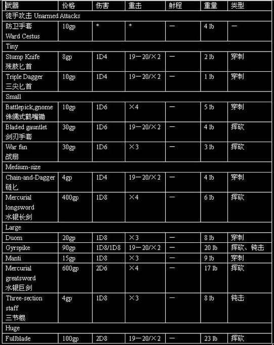
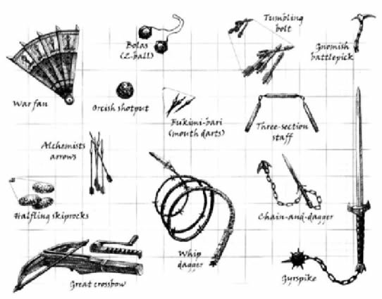
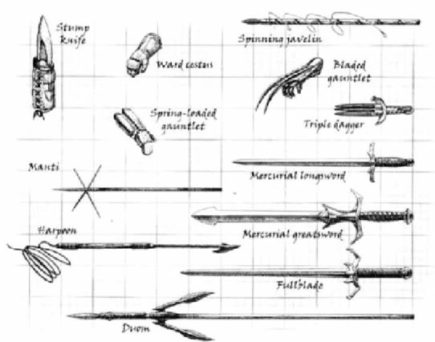

异种近战武器：

异种远程武器：

武器图片：


Alchemist’s Arrow：这种箭技术的高超令人惊奇，每一只都在中空的箭杆中装填有致命的炼金之火（Alchemist’s fire）。当射中目标时，箭杆爆开使得炼金之火直接溅在目标身上，一轮后，因与空气的接触导致炼金之火燃烧，造成1D4的伤害。目标可以使用整轮动作来尝试扑灭火焰来避免以后的伤害（火焰每轮会造成1D4），需要做反射豁免检定（DC15），在地面上滚动可以使检定+2。跳进水中或魔法式灭火可以自动熄灭该火焰。
Battlepick,gnome，侏儒式鹤嘴锄：这种武器很适合小体型的生物使用。一个小体型的生物可以双手使用它，此时视为军用武器。
Bladed gauntlet，剑刃手套：不同于普通的手套，剑刃手套的攻击不视为徒手攻击。剑刃手套上有两根极其尖锐的剑刃，从腕关节背面沿着前臂的方向向前伸展。表中的价格和重量都是一只手套的。
Bolas, 2-ball，流星锤：2头流星锤由一根长绳连接的两个沉重的木制圆球构成。这是用以绊摔对手的远程武器。当你掷出流星锤时，你做一个远程接触攻击检定，如果命中，对手被摔倒。如果对手在反擒抱检定中失败，该对手被擒抱。流星锤只能擒抱中型或小型的目标。对手可以以整轮动作来挣脱流星锤。当用流星锤绊摔对手时对手不能反绊摔。
Chain-and-Dagger，链匕：你可以在解除武器时获得+2（包括如果失败被对手反解除时），你也可以使用该武器进行绊摔，在绊摔检定时可以获得+2。如果失败被对手反绊摔，你可以选择丢弃链匕来避免被绊摔。
Crossbow, Great，巨型十字弓：巨型十字弓需要双手才能有效地使用，而无视使用者体型大小。装填巨型十字弓需要整轮动作，并且会引发借机攻击。中体型的角色根本无法用一只手来射击或装填。经过训练，大体型的生物可以以-4处罚来单手射击，但是依然不可以单手装填。如果一个大体型的生物试图同时用每只手用一只巨型十字弓发射，会受到双武器处罚。
Duom：Duom是一种具有普通矛头的长矛，同时有两片剑刃沿矛杆向后弯曲。该武器可以攻击10尺。擅长使用Duom的人也可以使用这种古怪颠倒的矛头攻击近距的敌人，这种攻击成为reverse thrust。在对近距敌人进行第一次攻击时攻击检定会有+2加值。
Fukimi-Bari (Mouth Darts)，吹针：这种纤细几乎和针一样的金属飞镖可以藏在嘴里，吹向目标。有效距离非常短，并且只能造成很小的伤害，但是在惊吓对手时却非常有用。每次攻击你可以至多发射3根吹针（但只能对同一目标）。因为吹针太小，因此力量修正值不会影响吹针。表中的价格和重量都是一根吹针的。
FullBlade：FullBlade比巨剑长18英寸，对于一个中体型的生物来说实在太大而无法使用。大体型生物可以单手使用，但攻击检定会受到-4处罚，如果大体型生物双手使用，将视作军用武器。具有擅长异种武器FullBlade的大体型生物可以不受处罚地单手使用FullBlade。FullBlade也被称作食人魔巨剑（ogre’s greatsword）。
Gyrspike：Gyrspike是双头武器，一根结实牢固的杆一端连接着链枷，一端连接着长剑。你可以如同使用双武器一般使用它，但会受到双武器处罚，如同使用一把单手武器和一把轻型武器。你可以在解除武器时获得+2（包括如果失败被对手反解除时）你也可以使用该武器进行绊摔，如果失败被对手反绊摔，你可以选择丢弃链匕来避免被绊摔。
Harpoon，鱼叉：鱼叉是一种宽刃的矛，并且带有倒钩。鱼叉的杆有一条绳索，可以控制被刺中的对手，尽管鱼叉一般用以猎鲸和其他大型海洋生物，但是在陆地上一样好用。由于鱼叉的重量很重，因此就算有擅长异种武器鱼叉专长，小于中体型的生物使用它依然会在攻击检定上受到-2处罚。如果你对对手造成伤害，对手必须做反射豁免检定（DC等同于10+伤害值），失败则鱼叉会停留在对手体内，这样的对手只能半速移动，并且不可以冲刺和奔跑，如果你在力量对抗检定中胜利，则可以控制绳索使对手只能在绳索范围内移动（绳索长30尺）。如果被刺中的对手要施法，必须做专注检定（DC15），失败会失去该法术。如果被刺中的生物有两只空手（即徒手），则可以用整轮动作来把鱼叉从伤口中拔出来，但是这样做会使其受到与最初鱼叉造成的伤害相同的伤害，例如，你用鱼叉攻击对手造成8点伤害，当对手拔出鱼叉时会受到另8点伤害。
Manti：Manti是具有4个额外矛头的短矛，5个矛头构成星形。受训过使用Manti的人可以每轮进行一次额外的借机攻击。
Mercurial Greatsword，水银巨剑：这种巨剑的剑刃内部有纤细的槽，其中流动着水银，当剑垂直放置时，水银会很快集中到剑柄中的圆球中。但如果挥舞巨剑，会使这种沉重的液体流出剑刃，使剑刃更加沉重。若未受训使用，会在攻击检定上受到额外-3处罚，该处罚累加到未受训使用异种武器的处罚上。
Mercurial Longsword，水银长剑：同上，不同之处为若未受训使用，会在攻击检定上受到额外-2处罚，该处罚累加到未受训使用异种武器的处罚上。
Shotpun，orc：特殊的训练可以使未加工的铁制的柚子大小的球成为致命的投掷物。甚至拥有擅长异种武器专长，也只有中体型或更大的生物可以有效地使用它，否则会在攻击检定上受到额外-3处罚，该处罚累加到未受训使用异种武器的处罚上。
Skiprock, Halfling：这种磨光的轻巧的石头是为半身人发明的，如果投掷它，它会从一个目标弹向另一个目标。如果Skiprock击中目标，它会向邻近的另一目标弹去（投掷者选择，但必须在第一目标5尺内）。投掷者立即对新的目标进行攻击检定，攻击加值等同于第一次攻击检定-2。
Skiprock可以被用来做投石索的弹药，但是如果想要用投石索来使Skiprock做到弹跳的目的，必须特别为此目标学习擅长异种武器。
Spinning Javelin：这种用于远程攻击的轻而柔韧的矛和一般的矛很相似，只是沿着矛杆有螺旋的凹槽。你可以在杆上绕上细绳（另一端系在手指上）。细绳可以使标枪在掷出后进行旋转，来提升其准确度、射程和穿透力。在标枪上缠绕绳子是移动等效动作，会引发借机攻击。把绳子的一端系在手指上是整轮动作，同样会引发借机攻击，但是同一根绳子可以应用于多根标枪。这种标枪可以不必缠绕绳子就投掷，那样它的伤害、射程和重击范围和普通标枪没有区别。如果近战中使用，Spinning Javelin视作普通标枪。
Spring-loaded gauntlet：这种长手套有一道金属的宽脊，从前臂底部一直延伸到手腕边缘，在手腕边缘处有一个明显的圆形的洞。这道宽脊内藏有强力的弹簧弹射（Spring-loaded）装置，可以将十字弓矢以很大的力量射出，类似于非常小的十字弓。装填方式是将矢插入洞里，然后拉回一根很小的控制杆。装填需要移动等效动作，会引发借机攻击。发射时需要用手臂瞄准，抬起手掌，将你的手掌对着你的对手，这个动作即可发射。如果想同时用双手发射两个Spring-loaded gauntlet会受到双武器处罚（双武器格斗专长不能减少处罚，因为那减少的是近战武器的处罚，而非远程武器。双巧手专长可以减少-4副手处罚）。表中价格和重量是指单一手套的。（鬼左：感觉就是袖箭）
Stump Knife，残肢匕首：残肢匕首类似于一把穿孔的匕首，除了它可以安全地装在因失去前臂而装的假肢上。对于擅长使用它的人来说，如果在一场持续的近战过程中对某个敌人造成过伤害，那么残肢匕首的重击范围会增倍（变为17－20）。对手不可解除残肢匕首。
Three-Section Staff，三节棍：最初作为农村工具用来打谷，三节棍由三节等长的木棍组成，由链条、皮革或绳索来连接起来。如果僧侣使用三节棍（当然他必须会擅长异种武器三节棍，因为它太大）可以使用僧侣的徒手攻击加值和更佳的每轮攻击次数。三节棍需要双手使用，一个僧侣/武器大师可以选择三节棍作为选择。
Triple Dagger，三尖匕首：这种武器被用以解除对手武器的一种方法，你持用它如同使用盾牌，而不是武器，因此不受双武器处罚。当使用三尖匕首时，你可以在解除武器时在对抗攻击检定上获得+3奖励（包括如果失败被对手反解除时）。三尖匕首也可以当作普通匕首来用，此时如果你用副手使用，所有的双武器处罚就会生效。
Tumbling Bolt：Tumbling Bolt类似于普通的矢，只是它的杆上有一些洞，实际上，杆中有一条纤细的通道在反射时可以使空气流动穿过Tumbling Bolt，这样会使Tumbling Bolt进行翻滚。被射击的目标对抗时在AC上只能有一般的敏捷修正值，因为实在无法预知这种矢会从那个角度翻滚过来。
War Fan，战扇：这种武器乍看起来和一般的妇人用的漂亮扇子没什么区别，实际上战扇的扇骨是钢制的，并且扇骨顶端如针般锋利。当在近战中一开始时，使用者可以做唬骗检定对抗对手的察言观色检定，如果胜利，则在第一轮的攻击检定会受到+4加值。
Ward Cestus，防卫手套：这种手套是由结实的皮革所制，在关节处缝入精制的金属片。用其攻击视作徒手打击。如果你采取全防御动作，你可以在AC上获得的+1偏斜加值，因为你可以用受保护的手背抵挡对手的攻击。对手不能解除防卫手套。表中的价格和重量是指单只手套。